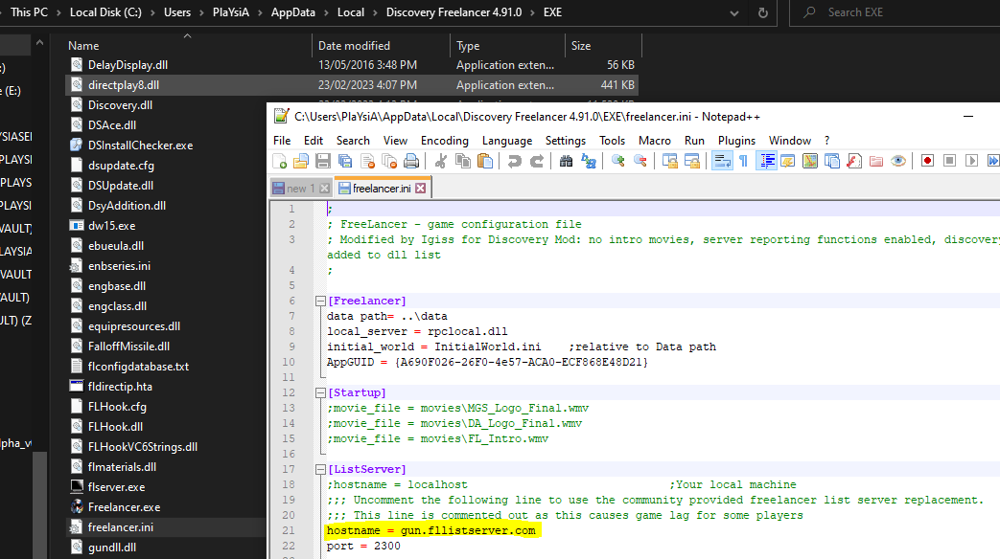

How to setup Freelancer for PlaYsiA's Discovery Server
Appears in game as: (AUS Non-RP) PlaYsiA's Discovery
Step 1 - Prepare Windows
1.1 Install .NET Framework
1.2 Enable .NET Framework 3.5 and DirectPlay
Enable .NET Framework 3.5 & DirectPlay by doing the following:
- Right click your Start Menu icon
- Select Settings
- Select Apps
- From the right, select Programs and Features
- In the new window on the left, select Turn Windows features on or off
- Enable .NET Framework 3.5 (includes .NET 2.0 and 3.0) & under Legacy Components, enable DirectPlay
- Click on OK to apply
Step 2 - Install Freelancer
2.1 Install Freelancer
Installing the base game of Freelancer is straight-forward.
Obtain the iso.
Note: Install as administrator to your desired location (standard click next to install)
2.2 Install the Discovery Mod
Install the Discovery Mod
First, Download the mod and install as administrator. Then:
- Browse to your Freelancer folder when it asks for the Freelancer Installation Folder, click Next
- Personal Opinion: Leave Bloom Effect off, click Next
- Select a location for the Freelancer Discovery install, take note of this location. Click Next and then Install
2.3 Update the Discovery Mod
Updating the Discovery Mod is easy, it’s just hard to find if you installed to the default directory.
By default, your Discovery Freelancer install will be in C:\Users\YOUR_USERNAME\AppData\Local\Discovery Freelancer 4.91.0
- Find your Discovery Freelancer installation
1.1 Place “%localappdata%\Discovery Freelancer 4.91.0” without the quotes into explorer if you installed to the default location
- Make a shortcut to DSLauncher.exe to your desktop or wherever you place your game shortcuts
- Run DSLauncher.exe through the shortcut you just made
3.1 If it complains about accounts ignore it for now
- Patch the launcher when prompted (or select from the right)
- Patch the game when prompted (or select from the right)
- Close the DSLauncher
Step 3 - Edit Freelancer
3.1 Enable the Freelancer Public Gamelist Server
In the default discovery, the Freelancer Public Gamelist Server is disabled, meaning that we can’t see the server yet. Why did they do that? Don’t ask me…
- Browse to your Discovery Freelancer install (where you were in step 2.3)
- Go into the EXE directory
- Edit Freelancer.ini with Notepad. Troubleshooting step: If it is read only, you will have to unset it, right click the file > properties > uncheck Read-only > OK
- Scroll down or otherwise find the section that begins with [ListServer]
- Remove the ; from the line with hostname, it should look like hostname = http://gun.fllistserver.com/
- Save the file

3.2 Install the PlaYsiA Discovery Launcher
This step is technically optional. The default discovery launcher can get in the way by forcing the client to first find the official server. Don’t ask me why.
Grab the latest release
- Backup your launcherconfig.xml in your Freelancer Discovery folder, (ie: C:\Users\PlaYsiA\AppData\Local\Discovery Freelancer 4.91.0)
- Unzip to to your Freelancer Discovery folder
- (If the server IP ever changes or you want to direct connect to a different server, then just edit ServerIP.txt. The latest Server IP is pinned in the Launcher discord channel whenever I notice it changes)
- Make a shortcut to the new DSLauncherV2.exe
- Run the new DSLauncher
Step 4 - Play Freelancer
4.1 Run the game and connect
Now it’s as simple as finding the server and joining!
- Run your chosen DSLauncher shortcut
- Click Launch Game (to the top right)
- In Freelancer go to Multiplayer, select Internet (If this is your first time running Freelancer on your PC, it will say something about an account ID, click yes or ok or whatever and continue on)
- Select (AUS Non-RP) PlaYsiA’s Discovery, double click or click on Connect
- Make your character and play (no offensive names please)
Discord Invite
It is highly recommended that you join our discord to keep up to date on new developments, such as events!
In-Game Rules
We aim to have as few rules as possible, but there does need to be some:
- Don’t use F1 or disconnect when interacting with other players.
- Don’t grief people
- No Camera Ship without prior permission.
- No inappropriate names, ie: slurs. I’m disappointed I even had to make this clear.
- Have fun
Griefing sub-rules/clarifications.
- You need to indicate with /tax at 4km+ distance with someone before firing. Simply select them and type “/tax”.
- No ambushing people as they undock or jump into a system.
- Player Bases and their Defence Platforms: Cannot be placed within firing range of jumpholes/jumpgates.
If you really want to, you can see the source here
Big thankyou to SynthSy for the design.